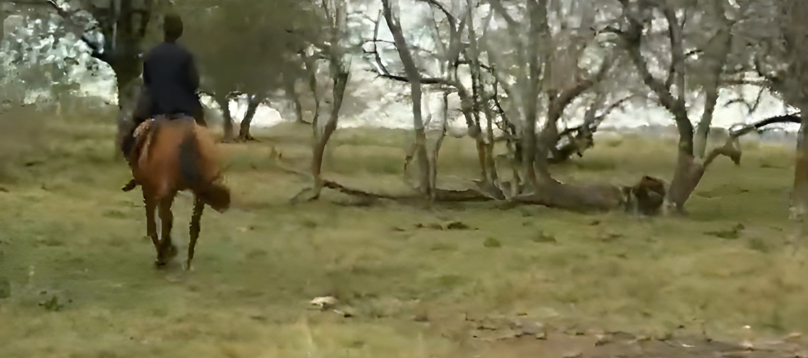
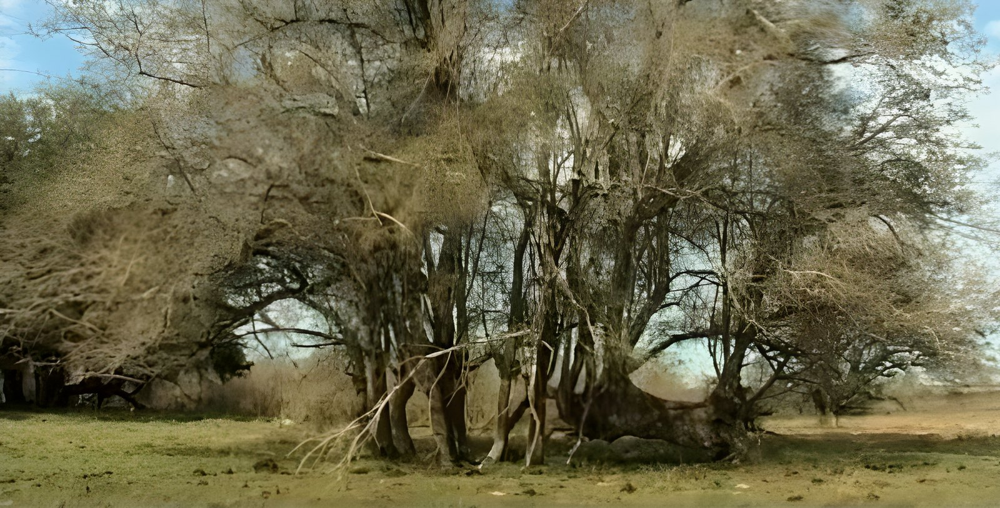
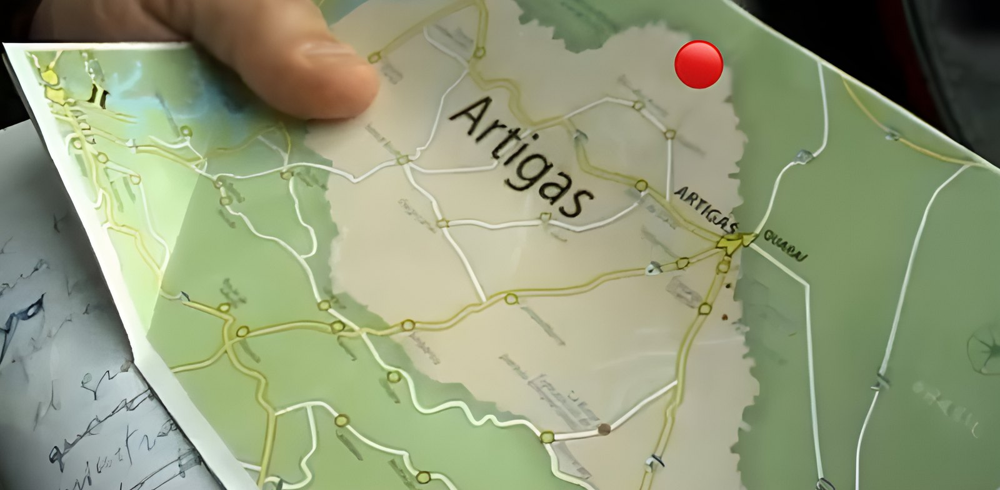

Un refugio junto al Cuareim
La Cueva del Indio está en la estancia «El Indio», también conocida como Cabaña «El Indio», sobre la costa del río Cuareim y a unos 20 kilómetros del pueblo de Topador. Según la leyenda, allí se refugiaron charrúas que sobrevivieron a la masacre de Salsipuedes.
Hoy el lugar se puede visitar, y en los alrededores todavía se encuentran utensilios.
La historia detrás del lugar
El 11 de abril de 1831, a orillas del arroyo Salsipuedes Grande, el ejército uruguayo atacó a los charrúas. La campaña la encabezó el presidente Fructuoso Rivera, y la tropa estaba al mando de su sobrino, Bernabé Rivera. Unos 300 charrúas fueron tomados prisioneros, llevados a Montevideo y vendidos como esclavos. Se recuerda como el hecho que exterminó a los charrúas como pueblo.
En junio de 1832, un grupo de charrúas sobrevivientes enfrentó a Bernabé Rivera en Yacaré Cururú, hoy departamento de Artigas, y le dio muerte. Entre ellos estaba Sepé, cacique charrúa que había sobrevivido a Salsipuedes. Las versiones difieren: el parte militar dice que murió en el combate, mientras que el relato charrúa y la tradición local cuentan que fue capturado y ejecutado días después.
El Árbol de los Sacrificios
En la misma estancia están los talas conocidos como «Árbol de los Sacrificios» o «Talas del Sacrificio», a orillas del Cuareim. Según la tradición local, allí los charrúas ejecutaron a Bernabé Rivera después de tenerlo varios días prisionero. El relato señala a Sepé como el encargado de su castigo.
Para ver: «La Huella de Sepé»
«La Huella de Sepé» es una miniserie documental de diez capítulos que recorre la vida de Sepé. La dirigieron Lucía Fernández y Rodrigo Spagnuolo, la produjo la compañía Identidad Antídoto junto con TNU y se estrenó en 2011. El capítulo 6 muestra la Cueva del Indio y los talas del sacrificio. Los capítulos completos están en YouTube.
Visitas
- La entrada es gratuita y la visita se coordina con el propietario, Gustavo Riani.
- Puede cobrarse un costo por el traslado.
- En el Día del Patrimonio, el primer fin de semana de octubre, se hacen visitas guiadas. En 2026 fueron el domingo 4 de octubre, de 9 a 16 h, con los profesores Rodrigo Rocha y Enzo Román.
Fotos

Foto: Captura del documental «La Huella de Sepé», cap. 6 (Identidad Antídoto y TNU, 2011)

Foto: Captura del documental «La Huella de Sepé», cap. 6 (Identidad Antídoto y TNU, 2011)

Foto: Captura del documental «La Huella de Sepé», cap. 6 (Identidad Antídoto y TNU, 2011)